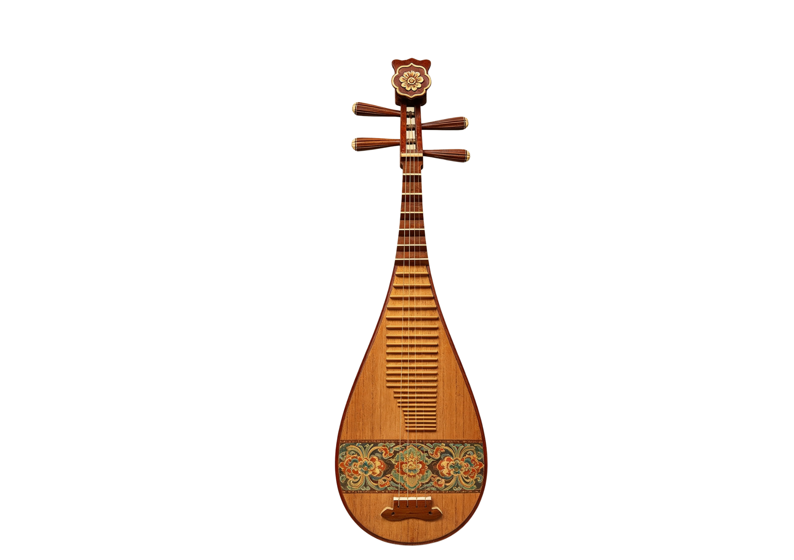
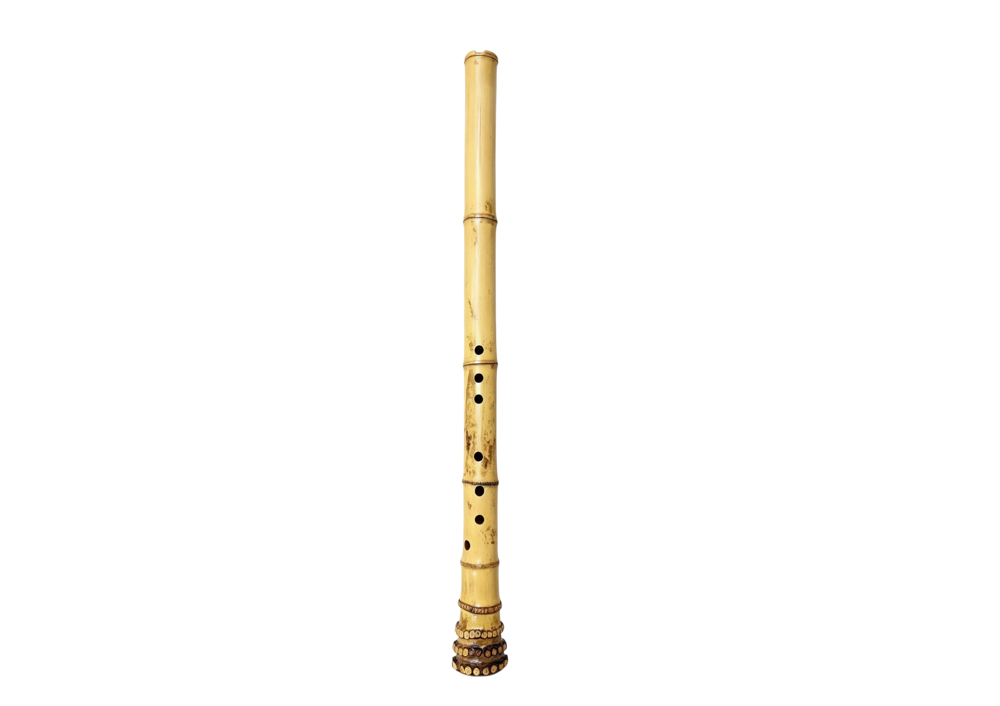
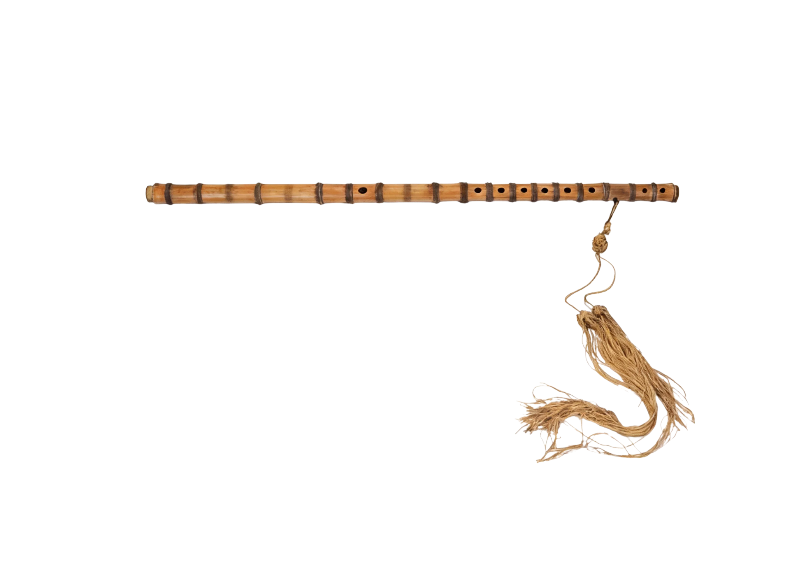
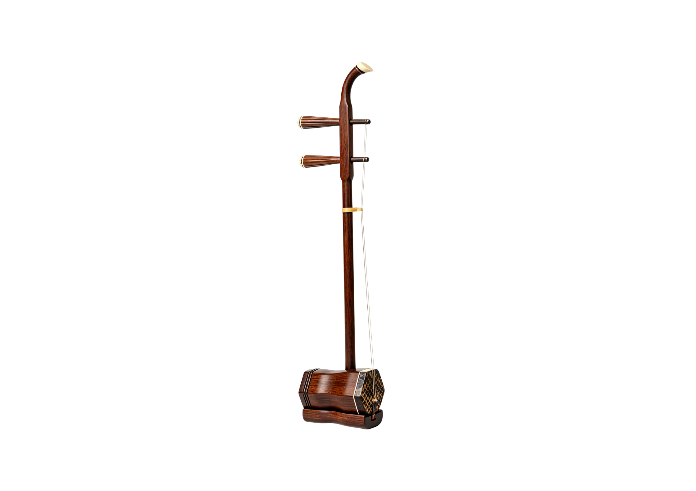
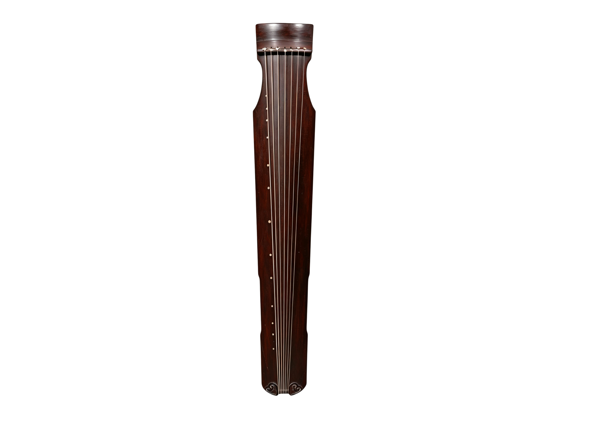
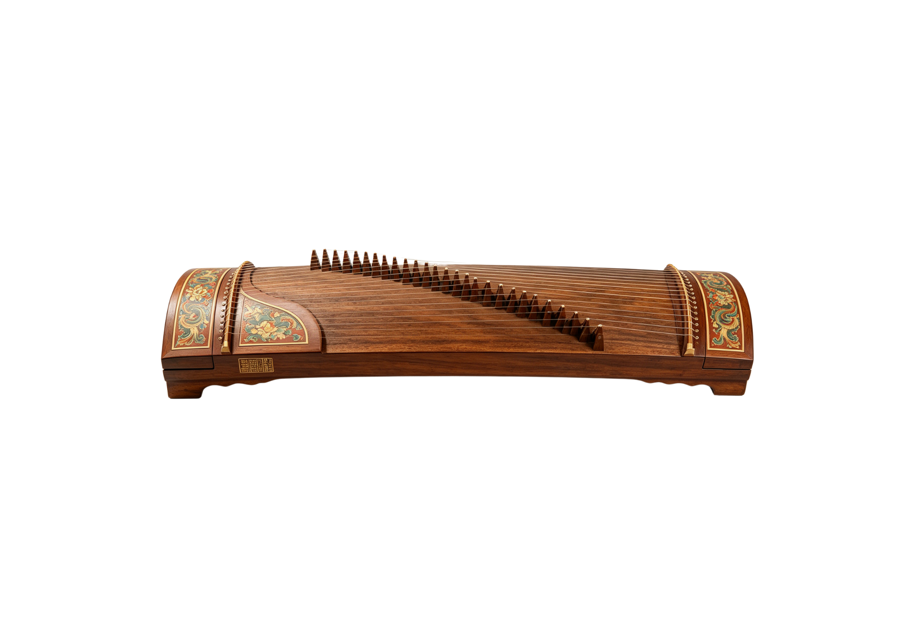

A Resounding Melodious Tone
滚轮滑动画卷
向下探索
↓
礼乐文明 · 千年回响
从庙堂钟磬到市井弦歌，探溯华夏音乐文化之源流
合乐图 · 乐伎群像
八音克谐
《周礼·春官》将乐器按材质分为八类，所谓"八音克谐，无相夺伦"，此乃中国最早的乐器科学分类法。
金
钟、镈、铙
击金而鸣，其声宏亮
为众音之纲
击金而鸣，其声宏亮
为众音之纲
石
磬
玉石相击，清越以长
通于神明
玉石相击，清越以长
通于神明
土
埙、缶
土火既济，其声浊而幽
近于人道
土火既济，其声浊而幽
近于人道
革
鼓、鼗
革木相搏，节奏之宗
动乎干戚
革木相搏，节奏之宗
动乎干戚
丝
琴、瑟、筝、琵琶
丝声哀哀，游鱼出听
六马仰秣
丝声哀哀，游鱼出听
六马仰秣
木
柷、敔
木声丁丁
所以起止众音
木声丁丁
所以起止众音
匏
笙、竽
匏竹相合，凤翼参差
能和众声
匏竹相合，凤翼参差
能和众声
竹
笛、箫、篪
竹声浏亮，龙吟凤吹
清远悠扬
竹声浏亮，龙吟凤吹
清远悠扬
乐团编制
古代乐团因场合而异，雅乐重礼制，燕乐尚技艺，民间则因地制宜，各臻其妙。
宫廷雅乐
周代设"大司乐"掌成均之法，以乐德、乐语、乐舞教国子。轩悬三面，宫悬四面，钟磬为主，干羽为容，其声庄重肃穆，用于祭祀朝会。
宴飨燕乐
唐设教坊、梨园，分坐部伎与立部伎。坐部贵于堂上，丝竹更奏；立部立于堂下，击鼓吹笙，歌舞递起，其声靡曼繁促。
民间俗乐
宋有"细乐""清乐"，明清戏曲勃兴。十番锣鼓，弦索重调，市井勾栏，声容并茂。由庙堂走向市井，音乐遂成百姓日用。
乐脉流变
先秦 · 礼乐刑政
钟磬之乐，八音克谐，神人以和。周公制礼作乐，音乐与政治伦理深度融合，"兴于诗，立于礼，成于乐"。
汉唐 · 丝路驼铃
张骞凿空，西域音乐入华。胡笳羌笛，琵琶横吹，融汇胡汉，新声妙入神。隋唐宫廷燕乐集大成，空前繁盛。
宋元 · 勾栏瓦舍
市民阶层勃兴，勾栏瓦舍遍布都城。杂剧南戏，诸宫调起，音乐由庙堂走向市井，由雅正趋于俗趣。
明清 · 雅俗共赏
昆曲雅正，皮黄慷慨。器乐独奏臻于化境，琴棋书画成为文人雅集之标配，传统音乐在传承与变革中生生不息。
↑ 返回画卷
节律部
Rhythmic Section

钟

鼓
编钟

埙
旋律部
Melodic Section

琵琶

箫

笛

二胡

琴

瑟
和声部
Harmonic Section

笙

阮
筝
← 返回
琵琶
琵琶，弹拨乐器首座，拨弦类弦鸣乐器。木制或竹等制成，音箱呈半梨形，上装四弦，原先是用丝线，现多用钢丝、钢绳、尼龙制成。颈与面板上设有以确定音位的"相"和"品"。
演奏时竖抱，左手按弦，右手五指弹奏，是可独奏、伴奏、重奏、合奏的重要民族乐器。
点击乐器聆听音色 · 拖拽旋转视角